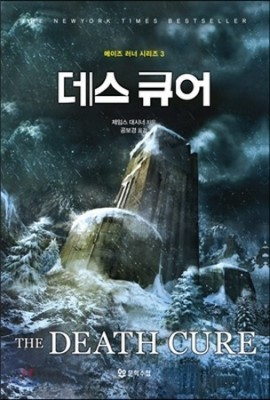

Welcome to visiting BOOK HISTORY!

책 소개
제목 데스 큐어 (원제 : The Death Cure)
저자 제임스 대시너
역자 공보경
출판사 문학수첩
줄거리
박스오피스 1위에 빛나는 SF 스릴러 '메이즈러너' 시리즈의 본편 3탄이자 완결편.
사막에서 숱한 힘든 일을 겪으며 서로에게 의지하며 버텨낸 소년들이 '사악(WICKED)'의 비밀을 파헤치다!
정체를 알 수 없는 '창조자'에 의해 실험쥐처럼 감금당한 채 실험대상이 되어버린 소년들의 의문과 갈등,
그리고 살아남기 위한 분투를 역동적이고 폭발적인 액션으로 풀어낸 '메이즈러너' 시리즈의 완결편에서는
소년들을 의문의 실험 속으로 몰아넣었던 '사악(WICKED)'의 존재가 차츰 드러나며 퍼즐이 맞춰지고,
삭제되었던 주인공 토머스의 기억이 돌아오면서 예상치 못한 결말을 향해 급물살을 타기 시작한다.
'사악(WICKED)'가 숨겨 왔던 비밀은 무엇이었을까?
출처 NAVER 책 - http://book.naver.com/bookdb/book_detail.nhn?bid=7917470